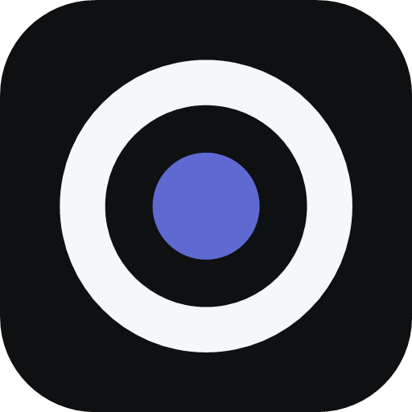

Dosyaları okuyup düzenlemem için önce üst çubuktan bir çalışma klasörü seç.
Enter gönderir · Shift+Enter yeni satır Model seçili değil. Ayarlardan API bağlantısını kontrol et.
OpenAI uyumlu herhangi bir sağlayıcı çalışır.
http:// veya https:// ile başlamalı.
Anahtar yalnızca bu bilgisayarda saklanır.